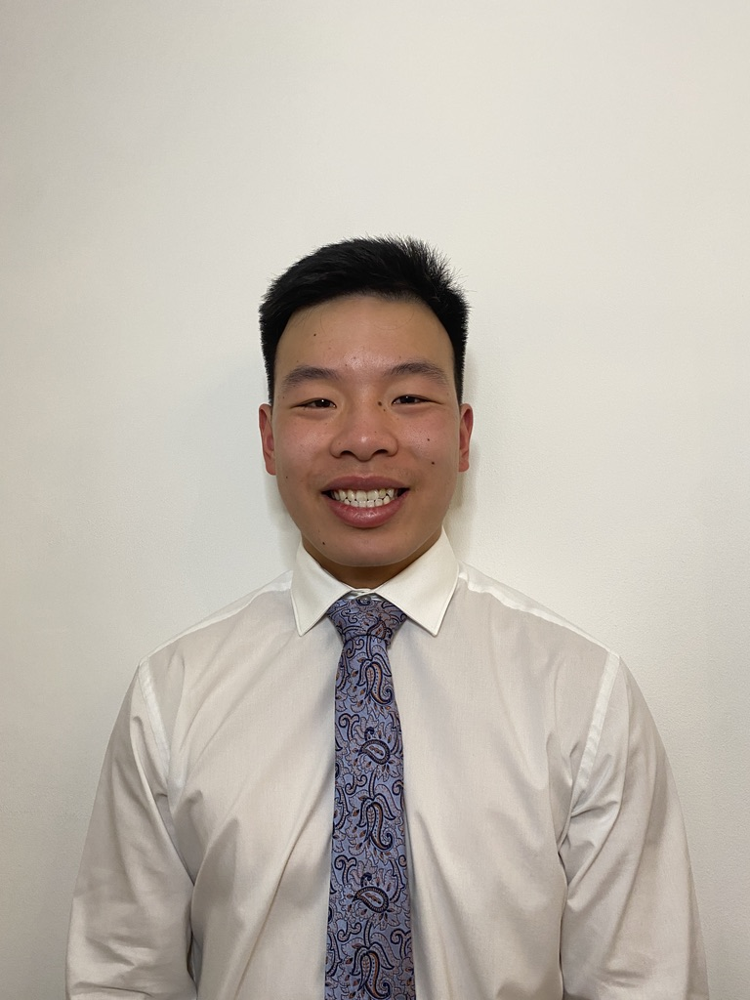

Lawrence Ka Ming Lee

Summary
Ambitious software developer with 1 year of experience specialising in
Java. Proven ability to communicate within cross-functional teams to
deliver software solutions that meet business requirements. Passionate
about contributing within a collaborative team environment and taking on
new challenges in a growth-oriented organisation.
Education
MChem Chemistry with Drug Discovery, University of Strathclyde (September
2017 - June 2022)
Work Experience
-
Software Developer Consultant - FDM Group (March 2023 - February 2024)
-
Engineered a consultant portal application using Java and Spring
Boot, establishing a REST API that streamlined communication
channels for account managers which saved them an average of 10
hours per week.
-
Implemented a REST API utilising both Python and Flask, integrating
the OpenAI API to enhance the efficiency of the CV administration.
This initiative resulted in a 30% reduction in processing time
through the automatic generation of CVs for consultants.
-
Conducted comprehensive software testing using a combination of
Postman for API testing and unit testing to identify and debug code
issues.
-
Research Assistant - Chemistry Clinic (September 2020 - August 2021)
-
Analysed the caffeine content for the client "Power Press Coffee" by
proposing the use of chemically modified electrodes. This
implementation improved the precision of the results by 25% compared
to the older analytical techniques.
-
Synthesised a novel bioderived formulation for the client "Glaize"
which reduced the reliance on petroleum-based materials by 60%.
-
Facilitated an engaging virtual presentation to Calderbridge Primary
School, inspiring 30 children for the next generation of scientists.
-
Waiter - Kwang Tung Chinese Restaurant (June 2014 - February 2024)
-
Led a staff of 5 servers, implementing strategic coordination and
collaboration to reduce wait times for customers to enhance overall
customer satisfaction.
-
Managed an average of 12 tables per shift, ensuring timely order
taking, delivery, and overall attentive service.
Skills
- Java (Spring Boot)
- Python (Flask)
- Javascript (ReactJS)
- SQL (MySQL)
- HTML/CSS
- Unit Testing, Databricks (PySpark, Scala)
- Postman
- Agile
- Methodologies
- OpenAI
- Microservices
- Unix, Git
Awards
-
Player's Player of The Year (2014 - 2016) at Gleniffer Thistle 99s for
two consecutive seasons
- Laboratory certificate in practical classes for Chemistry
- Queen's and President's badge at The Boys Brigade
Other